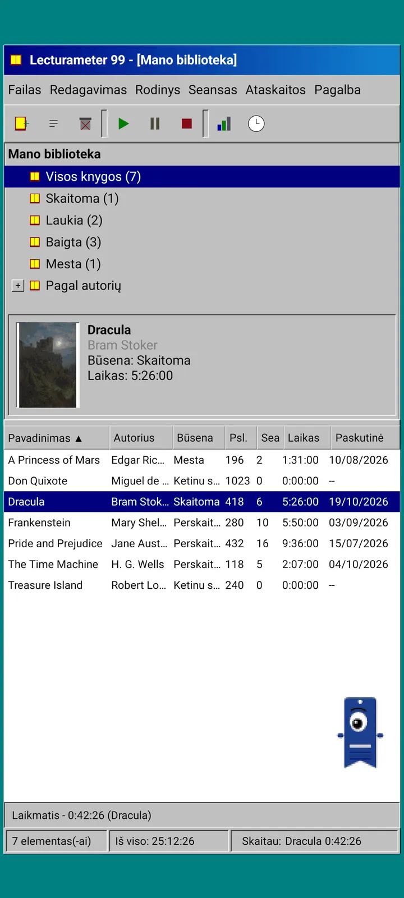
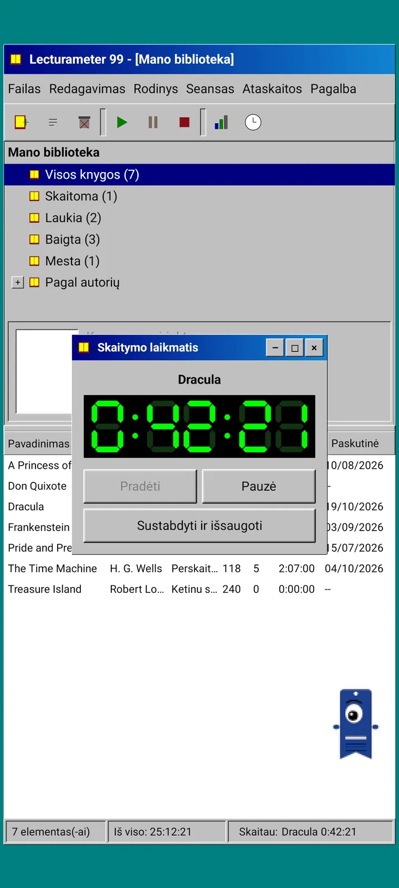
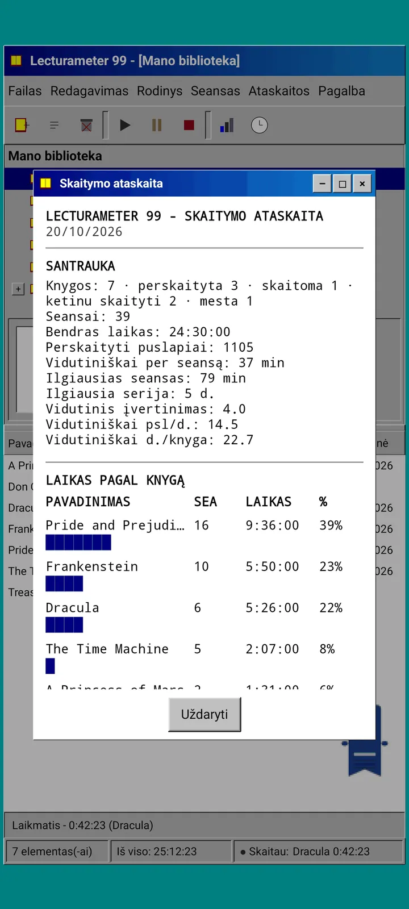
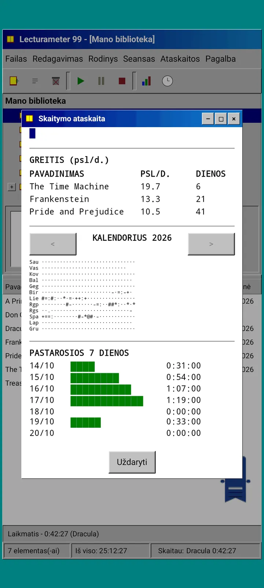
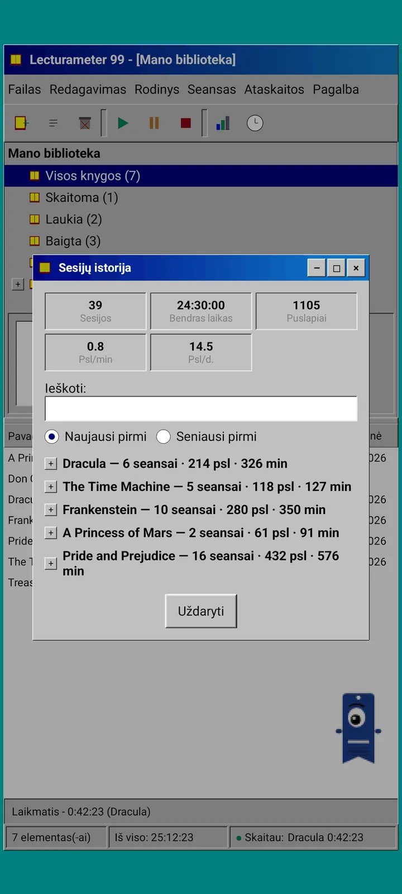
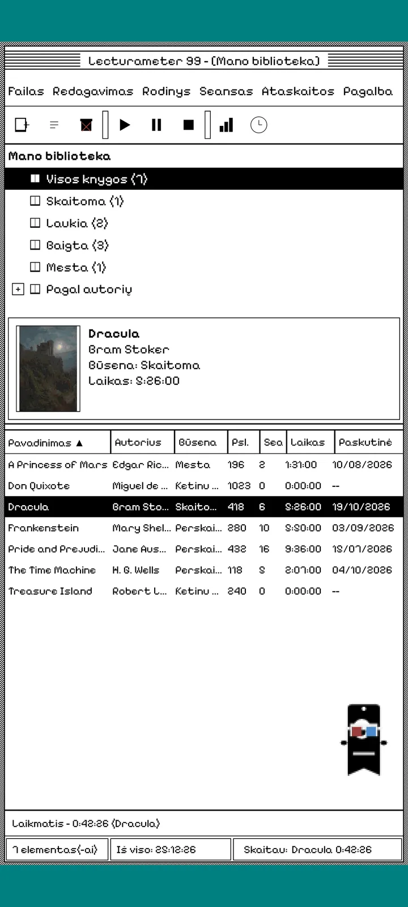
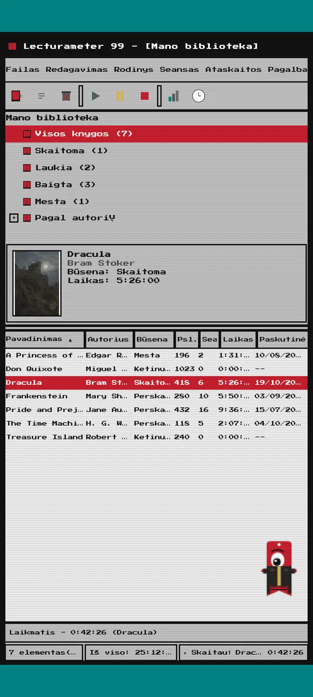
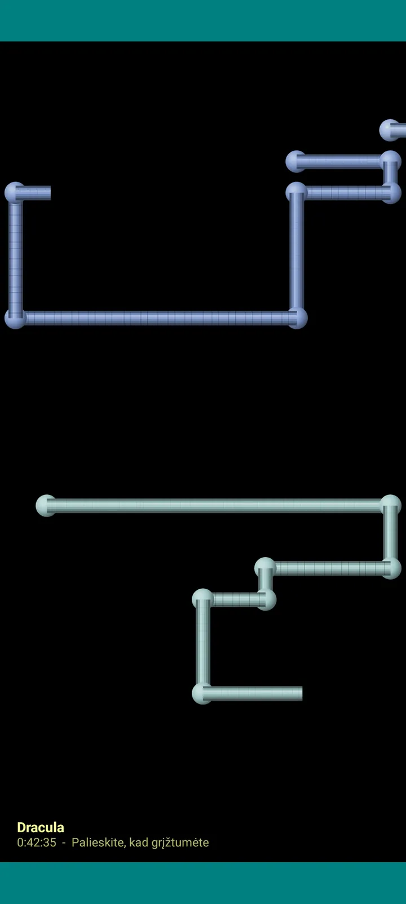

Lecturameter 99
Lecturameter, tarsi būtum jį 1999 m. įdiegęs iš CD-ROM. Atskira programėlė su langais, meniu ir lentelėmis, kuri atidaro tavo tikras atsargines kopijas.
Anksčiau Lecturameter 1999. Parduotuvės gali ją dar rodyti tuo pavadinimu: tai ta pati programėlė.

Kas tai
Dešimtojo dešimtmečio pabaigos kompiuterio programa tavo telefone. Vienas langas ant žalsvai mėlyno darbalaukio, meniu juosta, įrankių juosta, aplankų medis, tanki lentelė ir būsenos juosta.
- Bibliotekos medis: visos knygos, skaitomos, laukiančios, baigtos, apleistos ir pagal autorių
- Lentelė su pavadinimu, autoriumi, būsena, puslapiais, sesijomis, laiku ir paskutiniu skaitymu. Bakstelėk stulpelio antraštę, kad surikiuotum
- Tikra knygų paieška tame pačiame kataloge, kurį naudoja Lecturameter
- Importuoja ir eksportuoja Lecturameter atsarginę kopiją bei Goodreads CSV. Tavo duomenys įkeliami ir iškeliami nieko neprarandant

Kodėl ji sukurta
Eksperimentas: perkurti Lecturameter idėją nuo nulio pagal visiškai kitokius dizaino principus, neliečiant tikrosios programėlės. Iš visų interpretacijų 1999-ųjų man patiko labiausiai, tad baigiau ją kaip smagų pratimą ir pavertiau pilnaverčiu klientu. Ji tyčia paprastesnė už Lecturameter: tai eksperimentas ir, iš principo, toliau nebus kuriama.
- Laikmatis slankiajame lange su žaliu LCD ekranu. Jį galima perkelti, sumažinti į užduočių juostą, o skaičiavimas tęsiasi būsenos juostoje
- Kai sustabdai, seanso išsaugojimo dialogas leidžia jį užregistruoti pagal puslapius, procentus arba tik laiką ir apskaičiuoja tavo tempą lygiai kaip Lecturameter
- Išsaugotos sesijos yra Lecturameter sesijos: jos grįžta į modernią programėlę, jei eksportuoji Lecturameter 99 atsarginę kopiją ir ją importuoji į Lecturameter.

Skaitymo ataskaita
Statistika yra išspausdinta ataskaita lygiaplačiu tekstu: santrauka, laikas kiekvienai knygai su blokų juostomis ir greitis puslapiais per dieną.

Metų kalendorius
Kiekviena metų diena nupiešiama vienu simboliu pagal perskaitytus puslapius, o paskutinės septynios dienos po juo blokų juostomis.

Sesijų istorija
Sesijos, sugrupuotos pagal knygas medyje su pliusais ir minusais, o viršuje penki skaičiai: sesijos, bendras laikas, puslapiai, puslapiai per minutę ir puslapiai per dieną.
Temos
Classic 98 yra nemokama ir numatytoji. Paketas prideda dar šešias Android ir keturias iPhone, kiekviena su savo fonu ir savo garsais.

Pasirink ją meniu „Rodymas“
Rodinys, Tema... atidaro langą su temomis: septynios Android ir penkios iPhone. Pakeitimas pasiekia visus langus, laikmatį ir Pagi vienu metu.
- „Klasikinė 98“, nemokama ir numatytoji: pilki langai, tamsiai mėlynos pavadinimo juostos ir žalsvai mėlynas darbalaukis
- Temų paketas: 1984, Gumdrop, Memory, Towers, Core ir 8-bit. iPhone be 1984 ir Gumdrop
- Kiekviena tema turi savo darbalaukio foną ir savo garsus bakstelėjimams, langams ir laikmačiui
- Rodymas, Temos garsai juos išjungia, jei skaitai tyloje

Klasikinė 98
Pilki langai, tamsiai mėlynos pavadinimo juostos ir žalsvai mėlynas darbalaukis. Nemokama, su ja programėlė atsidaro.

1984
Vieno bito juodai baltas darbalaukis su taškų raštais ir kampuotais langais. Tik Android.

Guminukas
Permatomas spalvotas plastikas, suapvalinti mygtukai ir juostos fone. Tik Android.

Atmintis
Dešimtojo dešimtmečio diskų konsolės meniu tamsiai mėlynais atspalviais.

Bokštai
Dar viena dešimtojo dešimtmečio diskų konsolė: naktinė mėlyna su šviesiai mėlynomis linijomis.

Branduolys
Juoda ir žalia konsolė, tarsi niekada neišsijungiantis ekranas.

8 bitai
Stambūs pikseliai, mažai spalvų ir kampuotos raidės.

Išbandyk prieš mokėdamas
Bakstelėk užrakintą temą ir visa programėlė persijungs į ją. Jei uždarysi nepirkęs, grįš ankstesnė tema.
Ekrano užsklandos
Jos pasirodo tik veikiant laikmačiui, kai telefono neliečiate. Laukia 1, 3 ar 5 minutes arba niekada. Vienas bakstelėjimas tave grąžina, o laikmatis toliau skaičiuoja.

Skraidančios knygos
Pikselinės knygos, plasnojančios viršeliais per juodą ekraną.

Raidžių laukas
Įvairių abėcėlių raidės, praskriejančios pro šalį tarsi žvaigždžių laukas.

Puslapių vamzdžiai
Iš puslapių sudaryti vamzdžiai, kurie piešiasi, kol užpildo visą ekraną.

Šokinėjantis Pagi
Pagi, atšokantis nuo ekrano kraštų.

Skaitymo laikrodis
Sesijos laikas dideliais LCD skaitmenimis.

Pagi 99 ir jo kostiumai
Pagi keliauja ir į 1999: pikselinis ir laisvas ekrane, kaip tų laikų biuro padėjėjai. Tempi jį, jis kalba, kai paliesi, ir patarimus rodo geltonuose debesėliuose. Jis turi aštuonis kostiumus, kuriuos renkiesi Rodinys, Pagi kostiumas..., ir gali juos pasimatuoti prieš mokėdamas.
- Kasečių grotuvas
- Atbula kepuraitė
- 3D akiniai
- Neoniniai akiniai nuo saulės
- Diskelis rankoje
- Odinė striukė
- Kišeninis augintinis
- Kartoninė karūna
Parduotuvė
Programėlė nemokama ir pilnai tinka skaitymui registruoti. Tai, ką gali nusipirkti, keičia tik jos išvaizdą.
Visa programėlė, be jokio laiko apribojimo.
- Biblioteka, paieška, laikmatis ir sesijos
- Skaitymo ataskaita ir sesijų istorija
- Rankiniai ir išsaugoti seansai pagal puslapius, procentus arba laiką
- Dienos patarimas ir atsiliepimo siuntimas iš Žinyno meniu
- Lecturameter atsarginė kopija ir Goodreads CSV – importas ir eksportas
- Tema „Klasikinė 98“ ir Pagi 99
- Be paskyros ir be reklamų
Vienkartiniai mokėjimai, jokių prenumeratų.
- Temų paketas, €3.49: 6 temos su fonu ir garsais, taip pat ekrano užsklandos
- Ekrano užsklandos, €1.99: 5 ekrano užsklandos
- Pagi kostiumai, €1.99: 8 kostiumai
- Visas 1999, €4.49: temos, ekrano užsklandos ir kostiumai
Tik Android: neprivalomi patarimai Žinyno meniu, jei nori man nupirkti kavos.
iPhone nėra patarimų ir temų 1984 bei Gumdrop (Apple jų neleidžia); visa kita tokia pati.
Temas ir kostiumus galima išbandyti gyvai prieš mokant. Jei uždarysi nepirkęs, grįš tai, ką turėjai.
Kuo skiriasi nuo Lecturameter
Taip pat kaip Lecturameter
- Tie patys duomenys: knygos, sesijos, būsenos, įvertinimai ir pastabos. Atsarginės kopijos failas abiejose programėlėse tas pats.
- Knygų paieška pagal pavadinimą ar autorių.
- Tikras laikmatis: skaičiuoja fone ir net uždarius programėlę.
- Be paskyros ir be reklamų. Internetą naudoja tik knygoms ieškoti ir, jei paliksi įjungta, pseudoniminei naudojimo statistikai bei strigčių ataskaitoms (gali išjungti Žinynas, Privatumas).
- Prieinama 50 kalbų.
Tik 1999 leidime
- 1999 metų kompiuterio sąsaja. Jokio Material.
- Tikri langai: juos tempi, sumažini ir uždarai kryželiu.
- Tekstinė skaitymo ataskaita su simboliais nupieštu kalendoriumi.
- Kontekstinis meniu ilgai paspaudus ir sparčiųjų klavišų deriniai, jei prijungi klaviatūrą.
- Pikselinis Pagi 99 su patarimų debesėliais.
- Pasirenkamos temos su savo fonu ir garsais, ekrano užsklandos veikiant laikmačiui ir kostiumai Pagi.
Ko joje tyčia nėra
- Jokio Pro ir jokios prenumeratos. Skaitymo registravimas visiškai nemokamas, parduotuvėje parduodama tik išvaizda.
- Jokių iššūkių, bingo, metų Wrapped ar valdiklių.
- Jokios įtraukiančios sesijos, aplinkos garsų ar atsarginės kopijos Google Drive. Atsarginė kopija išsaugoma kaip failas.
Gauk ją
Lecturameter 99 yra nemokama ir prieinama iPhone bei Android.
Perskaityk tinklaraščio įrašą , kad sužinotum, iš kur ji atsirado ir ko tikėtis.